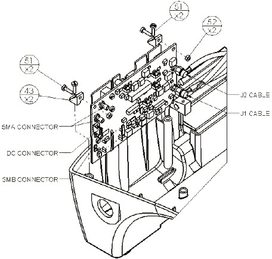
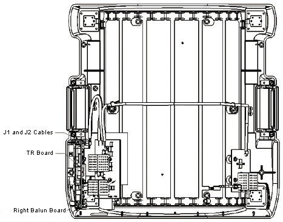

Operating Documentation
Direction 5670006, Rev# 1
Discovery MR750w GEM Service Methods
Module Version 5.0, Version Date 9/19/11
Operating Documentation |
| Required Persons | Procedure Timing |
| 1 | 30 minutes |
This document contains replacement procedures and lists the Field Replaceable Units (FRUs) for the 3.0T Split-Top Head Coil by GE BGL. Proceed to Section 4 for the procedure to replace the external cable and mechanical hardware of the coil. Refer to Section 5 for a list of the coil FRUs and other accessories.
Standard Tool Kit
TR Board, 5366299
Cable Assembly, 5182567 (part of FRU 5269301)
Remove the head coil top from the head coil bottom.
Unscrew the 5 brass screws (No. 45) and 9 nylon screws (No. 29) with nylon washers (No. 32) from the head coil Bottom Cover Plate shown in Illustration 1.
Illustration 1: 3.0T Split-Top Head Coil Bottom Cover Plate

Remove the head coil Bottom Cover Plate from the bottom of the head coil.
Unscrew the two M3 x 8 screws (No. 51) from the TR Board secured to the head coil bottom. (See Illustration 2.)
Lift the TR Board and while holding it outside of the coil, disconnect the cable from the TR Board.
Remove the two SMA Straight Crimp-Type Plugs (shown in Illustration 2) for the RG58 Cable using the appropriate spanner.
Unplug the SMB RG174 Straight Cable Crimp and female DC Connector on the cable assembly.
Illustration 2: Connectors on TR Board

Remove the sealing nut from the Cable Strain Relief (P/N 5248402) using the appropriate spanner.
Pull and remove the cable from the head coil, and reposition the TR Board.
To reconnect the cable assembly to the TR Board:
Insert the cable through the opening in the housing.
Lift the TR Board (shown in Illustration 2), and hold it outside of the coil.
Connect the two SMA Straight Crimp-Type Plugs for the RG58 Cable to the TR Board, and tighten until snug, but do not overtighten.
Insert the SMB RG174 Straight Cable Crimp and the female DC Connector on the cable assembly into the TR Board.
Insert the TR Board into the head coil, and secure it to the head coil bottom with two M3 x 8 screws (No. 51 in Illustration 2). Tighten the screws until snug, but do not overtighten.
Using the appropriate spanner, tighten the sealing nut of the cable strain relief until it is snug, but do not overtighten.
Replace the head coil Bottom Cover Plate (No. 44).
Secure it with the 5 brass screws (No. 45) and 9 nylon screws (No. 29) with nylon washers (No. 32) shown in Illustration 1.
Tighten the screws until snug, but do not overtighten.
Reattach the head coil top to the head coil bottom.
Perform a test scan with the head coil to verify operation.
Perform a White Pixel test. If the White Pixel test fails, ensure all the screws are tightened properly and repeat the text until it passes.
Remove the head coil top from the head coil bottom.
From the head coil bottom, unscrew 5 brass screws (No. 45) and 9 nylon screws (No. 29) with nylon washers (No. 32) shown in Illustration 1.
Remove the head coil Bottom Cover Plate from the bottom of the head coil.
Unscrew the two M3 x 8 screws (No. 51) from the TR Board secured to the head coil bottom shown in Illustration 2.
Disconnect the J1 and J2 Cables from the TR Board. (See Illustration 3.)
Illustration 3: Cable Assembly on 3.0T Split-Top Head Coil

Lift the TR Board out, and while holding it outside of the coil, disconnect the cable from the TR Board.
Remove the two SMA Straight Crimp-Type Plugs for the RG58 Cable using the appropriate spanner.
Unplug the SMB RG174 Straight Cable Crimp and the female DC Connector on the cable assembly from the TR Board. (See Illustration 2.)
To reinstall the TR Board:
Reconnect the two SMA Straight Crimp-Type Plug for the RG58 Cable to the TR Board.
Plug the SMB RG174 Straight Cable Crimp and the female DC Connector on the cable assembly (P/N 5182567) into the TR Board.
Tighten the screws until snug, but do not overtighten.
Connect the J1 and J2 Cables to the TR Board.
Insert the TR Board into the head coil bottom, and secure using two M3 x 8 screws (No. 51). Tighten the screws until snug, but do not overtighten. (See Illustration 2.)
Position the head coil Bottom Cover Plate onto the bottom of the head coil with 5 brass screws (No. 45) and 9 nylon screws (No. 29) with nylon washers (No. 32) shown in Illustration 2. Tighten the screws until snug, but do not overtighten.
Reattach the head coil top to the head coil bottom.
Perform a test scan with the coil to verify operation.
Perform a White Pixel test. If the White Pixel test fails, ensure all the screws are tightened properly and repeat the test until it passes.
Table 1: 3.0T Split-Top Head Coil FRUs
| Description | GE Part Number |
| 3.0T Split Head Coil | 5182872 |
| 3.0T Head Coil Cable Assembly FRU Kit, HDv | 5269301 |
| 3.0T Head Coil TR PCB Assembly FRU Kit, HDv | 5366299 |
| Spring Contact | 2355094 |
| P9364FC Mirror | 2145391 |
Table 2: 3.0T Split-Top Head Coil Accessories (Not FRUs)
| Description | GE Part Number |
| Cushion Head - Split Head Coil, HDv | 5327302 |
| Head Coil Flat Cushion, HDv | 5327301 |
| Kit Head Restraint Straps | 2352202 |